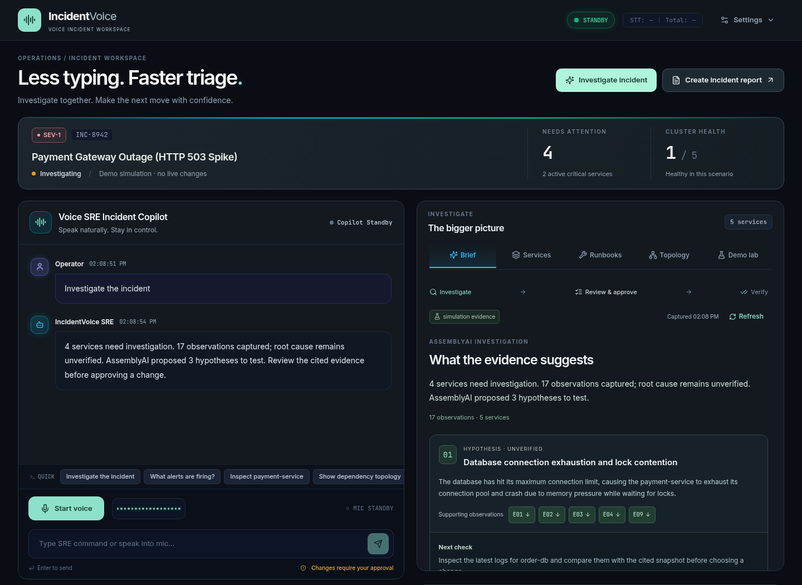
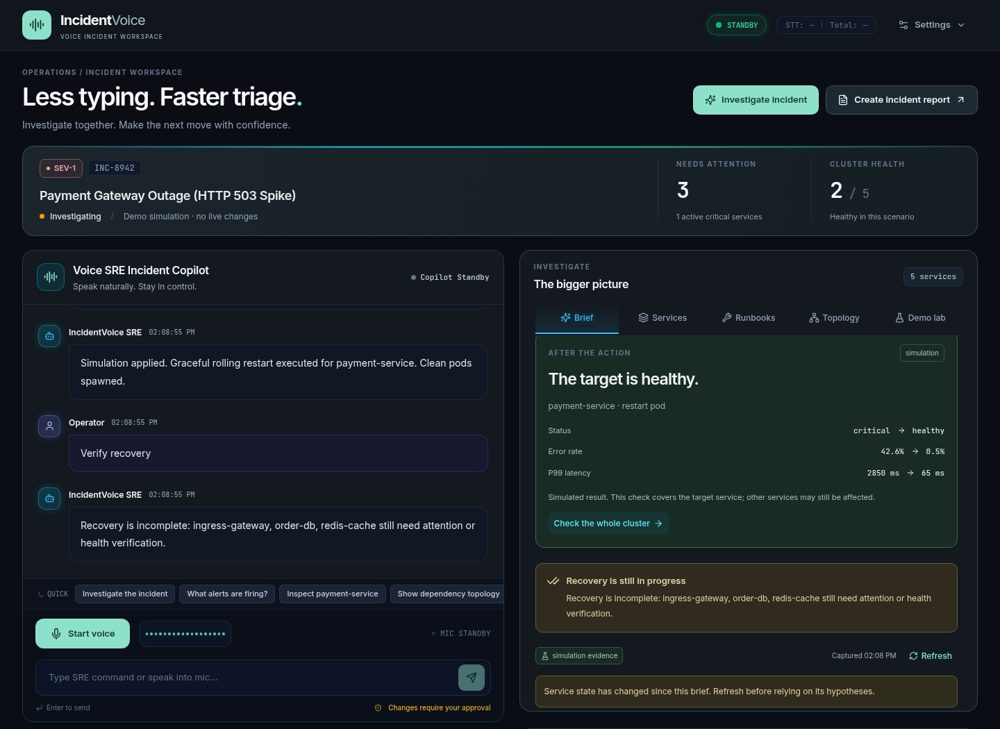

IncidentVoice
An incident copilot that shows its work.
Connect voice-led investigation to cited observations, explicit approvals, and recovery verification.
- Built for the AssemblyAI Voice Agent Hackathon
- Voice triage, explicit approvals, evidence-based incident reviews
01 / THE PROBLEM
Keep the investigation moving.
During an outage, engineers move between conversations, logs, service health, and follow-up notes.
- A successful command is not proof of a recovered service.
- Engineers need to inspect the diagnosis, control the action, and verify its effect.
- Target users: on-call engineers and small platform teams.
02 / THE WORKFLOW
From a question to a reviewed action.
Ask about the incident, inspect evidence, and decide what should happen next.
- Investigate → capture health and logs, then inspect evidence-linked hypotheses.
- Stage → show the exact action, service, parameters, and approval expiry.
- Approve or cancel → execute once, then show the observed result.
- Verify → compare before/after health and check the remaining incident impact.
03 / ASSEMBLYAI
Two voice paths. One tool boundary.
Both voice engines share the same session and approval logic.
- Managed: AssemblyAI Voice Agent API with 24 kHz PCM audio and client tools.
- Custom: AssemblyAI Streaming v3 STT → configured LLM or labeled scripted commands → speech output.
- Investigation briefs and reports: AssemblyAI LLM Gateway analyzes captured evidence.
- Provider failures and local fallbacks are visible in the workspace.
04 / OPERATOR CONTROL
Approval is part of execution.
A model request stages a mutation. A second tool call does not authorize it.
- Each action has a unique ID, exact target, and a 30-second approval window.
- Cancellation, expiry, role checks, and replay rejection are enforced in the backend.
- Live infrastructure requires an operator token.
- Automatic approval is restricted to explicitly enabled simulation.
05 / EVIDENCE
Open the observation behind the hypothesis.

Captured facts.
Inspectable hypotheses.
- 17 observations from five simulated services in this demonstration.
- AssemblyAI analysis linked to exact evidence IDs.
- Read-only next checks; stale evidence is flagged.
06 / RECOVERY
A healthy target. An incident still in progress.

Success needs context.
- Approve the exact service restart.
- Compare observed before/after target health.
- Check the whole cluster: three services still need attention here.
- Export the evidence and outcomes for the next engineer.
07 / NEXT STEPS
A focused prototype with a clear path.
The next milestone is a repeatable, measured pilot with an on-call team.
- Current limits: in-memory single-process sessions and limited live infrastructure actions.
- Validate microphone quality, interruptions, and response latency on the deployment target.
- Add persistent evidence storage, individual identities, and deeper telemetry integrations.
- Supply the final repository, HTTPS app, and demo video links in the submission form.